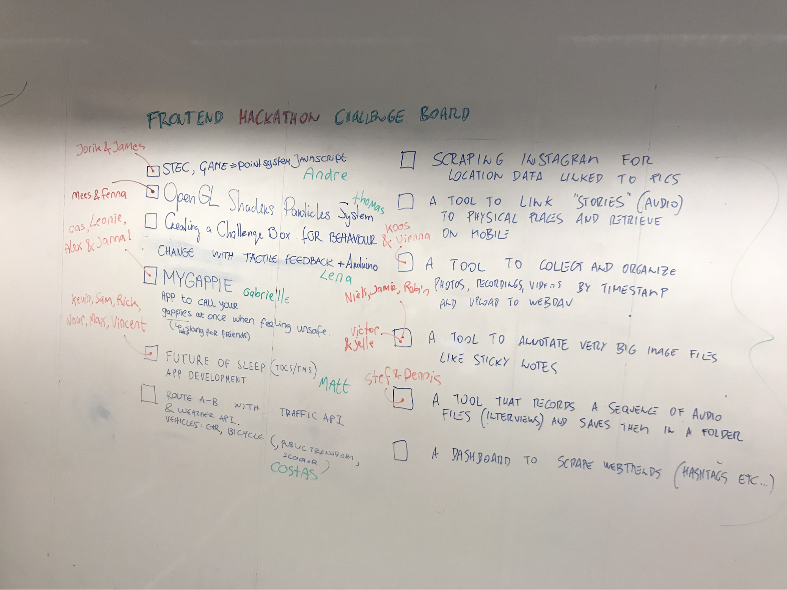
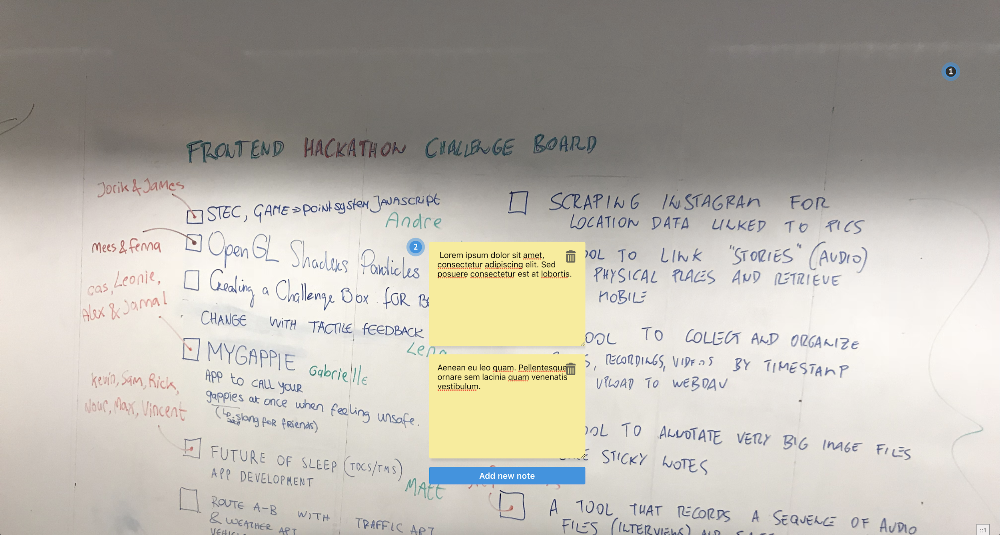

Hackathon
Together with the students of the master: Digital Design we participated in a hackathon organised by the minor. The assignment was to help the master students with bringing their concepts and ideas to life. The hackathon took place at the HvA.
As minor student we got to choose from the following list of projects:

The assignment that looked cool to me was a tool to annotate very big images like sticky notes. I’ve thought about making such a tool as a side project myself a while ago. However I never did it. So this was a nice opportunity to make a prototype of the tool. Victor was also excited about this project and we decided to start coding it together.
Vienna and Koos chose a project where the goal was to make a file organizer. As this would be a nice combination the idea was to combine these two tools later on.
Together with Victor, Koos and Vienna we took a existing boilerplate to get up to speed quickly. Then we made some appointments regarding the style. Koos and Vienna would make the basic styles such as buttons and headings. Victor and me started coding our prototype.

To build a nice prototype we decided to separate the project in two parts. One part was building the functionality to add an note and the other to control the tool using panning and zooming. My job was to build the panning and zooming functionality.
My idea was to track start and end position of the cursor of the user in between a mouse down event and a mouse up event. Using this I could change the position of the image. While changing the position the mouse. However this didn’t go exactly as planned and turned out to be a lot more difficult then I thought. As I fixed one problem, another rises. Slowly I was getting there but we also were running out of time quickly. To get the other functionality working in the limited time we had left, we decided to drop the panning and zooming and focus on the adding the notes to the image. I couldn’t get it working in time but I still learned a lot about positioning with JavaScript and all the different mouse events.
In the end we managed to build a robust and nice prototype where the user could add notes to the image by clicking somewhere on it. It was also possible to add multiple notes to one location and/or delete those.
Except for the panning and zooming functionality we also wanted to add a real-time connection with other users using websockets. This way people could collaborate. Also we wanted to add multiple colors for the notes to enable proper sorting of notes.
I think we learned a lot from the hackathon and it was nice to try to build a prototype in such little time.
